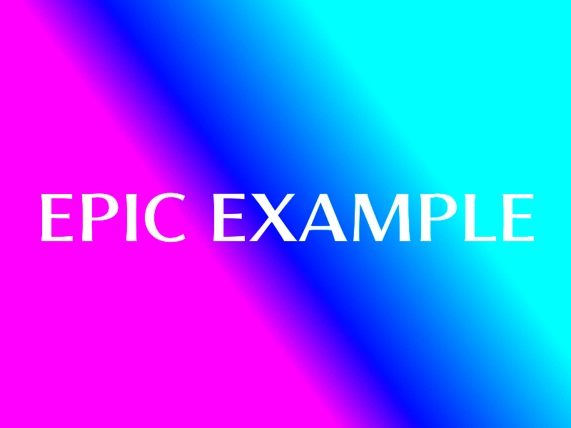
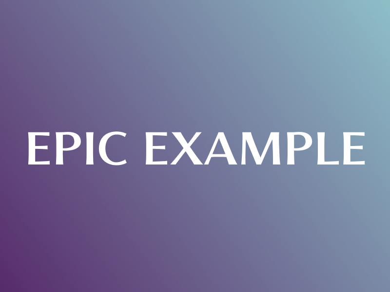

Saturate
Overview
The Saturate command will set the saturation of the given image.
Arguments
| Name | Type | Options | Description |
|---|---|---|---|
| Amount | float | N/A | How much to set the saturation to. |
| Url | String | N/A | The URL of the image to saturate. |
| Image | Attachment | N/A | An image attachment which will be saturated. |
Usage
Example 1
/saturate amount: 2 url:"https://example.com/myimage.png"
Will set the saturation of the image located at https://example.com/myimage.png to 2.
Example 2
/saturate amount: 2 image:"Discord Image Attachment"
Will set the saturation of the image attached with the command in Discord to 2.
Example Image

Example Result 1
/saturate amount: 10
Using the command with saturation value 10:
Example Result 2
/saturate amount: 0.25
Using the command with saturation value 0.25:
